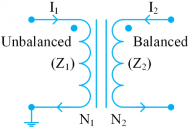
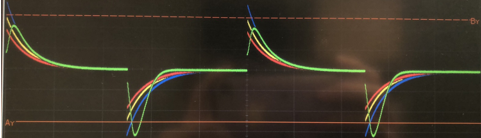
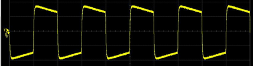
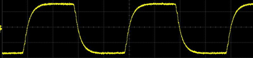
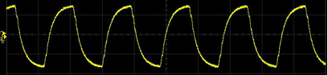
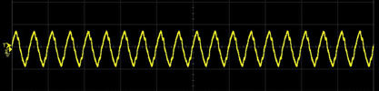

Lab Validation
ESD Safety
关于ESD
Static electricity是指任何dielectric（绝缘） material表面储存的charge。当positively and negatively charged objects产生接触或靠得足够近，电荷被discharge，就会产生ESD (electrostatic discharge)。例如人走过地毯或脱下毛衣时，在自己身上储存了charge，然后触碰电子设备，有可能导致几千伏的ESD。
由于半导体元件越来越小，会导致物理上insulator film（多为SiO2）的thickness变薄，其dielectric strength也会变弱。同时，以前的电子设备大多固定在某个场所，而现代设备经常需要插线拔线、充电等等，也就是说”charge objects are brought into contact or close”的情况更频繁了。两个因素综合，导致ESD protection越来越重要。
实验室如何防止ESD
- Only move the boards inside anti-static bags
- Once in the lab, or handling the boards, make sure to touch ground before removing the board（例如碰一下电路板上的金属cage）
（注：与lab test较无关，关于ESD Diodes，请跳转这里。）
Signal Integrity
诊断scope上出现的各类distortion。
The case of balun: 
| 对于低频的方波来说，电感只会在信号transition的那一刻产生磁场，在信号稳定期间则secondary inductance没有能量来源，会很快demagnetize。（例：10kHz） |  |
| 对于低中频之间的方波来说，会变得可以接受，但质量不好。（例：1MHz） |  |
| 对于中频的方波来说，上述问题不存在，但是电感本身的速度限制开始显现。（例：5MHz） |  |
| 对于越来越高频的信号，速度问题越来越严重，最终会让amplitude也开始drop |
  |
The case of AC coupling cap:
如果AC coupling cap太小，也会出现右图同样的情况。两种解释：
|
可以尝试以下解决方法：
- Increase the signal frequency
- Change to a bigger cap（把signal frequency代入公式中算一下，就能知道大概数量级）
The case of reflection:
详情跳转这里。